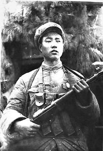
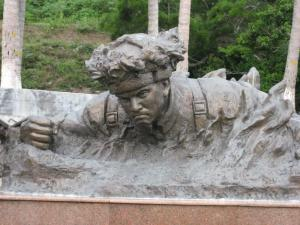

英雄事迹


1950年6月25日，朝鲜战争爆发，朝鲜民主主义人民共和国发动进攻，大韩民国节节败退，向美国等盟国求救。美国为了维护其在亚洲的领导地位和利益，当日杜鲁门总统授权驻韩美军攻击朝军。1950年7月7日联合国通过84号决议，授权以美国为首的联合国军武力干涉朝鲜战事。同日，中华人民共和国组建东北边防军（后更名为中国人民志愿军），如果朝鲜人民军被打败，中国可以迅速派遣部队入朝帮助朝鲜同美国为首的联合国部队进行作战。
1950年9月15日，美军在仁川登陆，朝鲜战场形势逆转，朝鲜人民军溃退。因为朝鲜对中国封锁了军事情报，所以战争在没有事先通知中国的情况下爆发了，致使中国领导人对此颇有不满，但在美国直接参与战争的情况下，还是表示要支持朝鲜。中国政府表示坚决抗议以美国为首的“十六国”联合国军“打击朝鲜人民军，但美军不予理会，军队向中朝边境推进，同时，美国飞机多次侵入中国领空，轰炸丹东地区，把战火烧到了鸭绿江边，严重地威胁着刚满周岁的中华人民共和国。在此关键时刻，党中央和毛泽东主席英明地决定，派遣中国人民志愿军开赴朝鲜，同英雄的朝鲜人民和朝鲜人民军一起，并肩作战，抗击侵略。
1951年3月，邱少云响应毛主席“抗美援朝保家卫国”的伟大号召，参加了中国人民志愿军。当他来到朝鲜，看到美帝国主义和李承晚匪帮对朝鲜人民烧、杀、抢、掠，无恶不作。目睹朝鲜儿童遭受自己童年时代一样的苦难，倍加激起邱少云对帝国主义反动派的仇恨。要为打败美国侵略者贡献自己的一切。
11952年10月，邱少云所在连队接受了一项光荣而艰巨的任务，就是消灭盘踞在平康和金化之间的三九一高地的美李匪军，把战线向南推进。然而，我军阵地到三九一高地之间，有着三千米宽的开阔地，这是敌人的炮火封锁区。要在这样长距离的炮火下冲击，确实是件不容易的事情。因此，为了缩短冲击距离，出奇制胜、打得敌人措手不及，我军决定在发起总攻击前一天的夜里，把部队潜伏在敌人阵地的前沿。
战斗誓言 
1952年10月中旬，在抗美援朝一次战斗中，邱少云所在营奉命担负潜伏任务。潜伏前，邱少云向党支部递交了入党申请书，写道：“宁愿自己牺牲，决不暴露目标，为了整体，为了胜利，为了中朝人民和全人类的解放事业，愿献出自己的一切。”执行任务中，邱少云在距敌前沿阵地60多米的草丛中潜伏时，敌人突然向潜伏区逼近，为了掩护潜伏部队，指挥所命令炮兵对敌进行打击。敌人遭到打击后出动飞机侦察，并盲目发射侦察燃烧弹，一颗燃烧弹正好落在邱少云身边，飞迸的火星溅落在他的左腿上，烧着了他的棉衣、头发和皮肉。但为了不暴露潜伏部队，他严守纪律，咬紧牙关，双手深深插进泥土中，以惊人的毅力忍受着剧痛，一声不吭、一动不动，直至壮烈牺牲，年仅26岁。
烈火永生1952年10月，为打击盘踞在上甘岭的美国和韩国军队，中国人民志愿军第15军29师87团9连战士邱少云被选派参加潜伏部队，并担任了发起冲锋后扫除障碍的爆破任务。12日上午，敌机向他所在的潜伏区进行低空扫射，并投掷燃烧弹。火势蔓延到他身上，为了不暴露潜伏目标，邱少云任凭烈火烧焦身体也一动不动。他双手深深地插进泥土里，身体紧紧地贴着地面，直至生命最后一刻，壮烈牺牲。